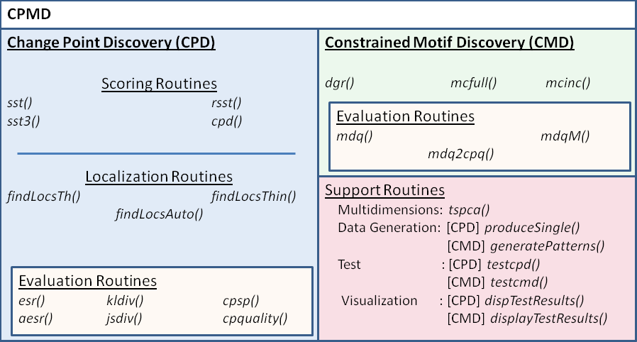
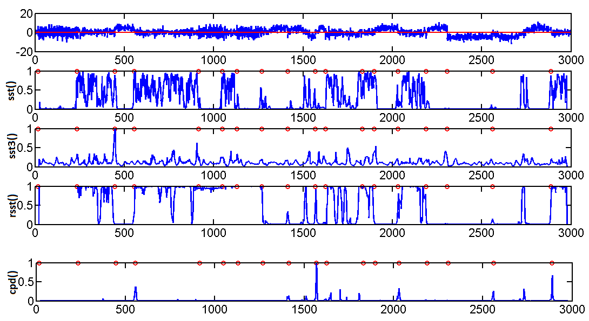
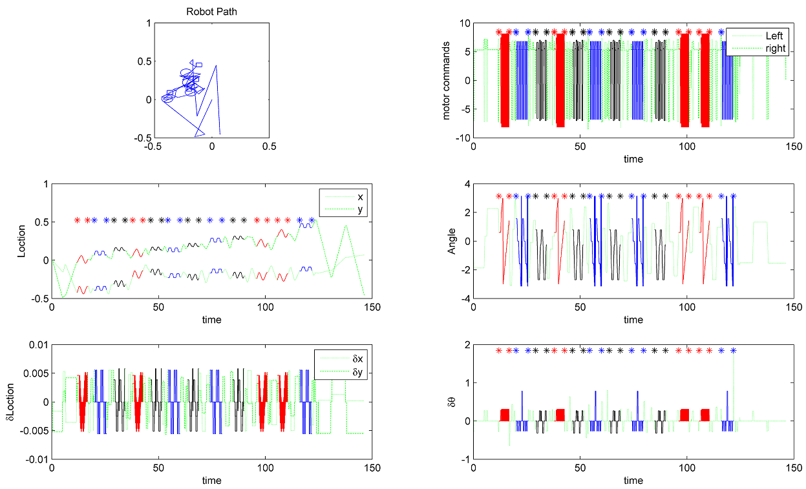
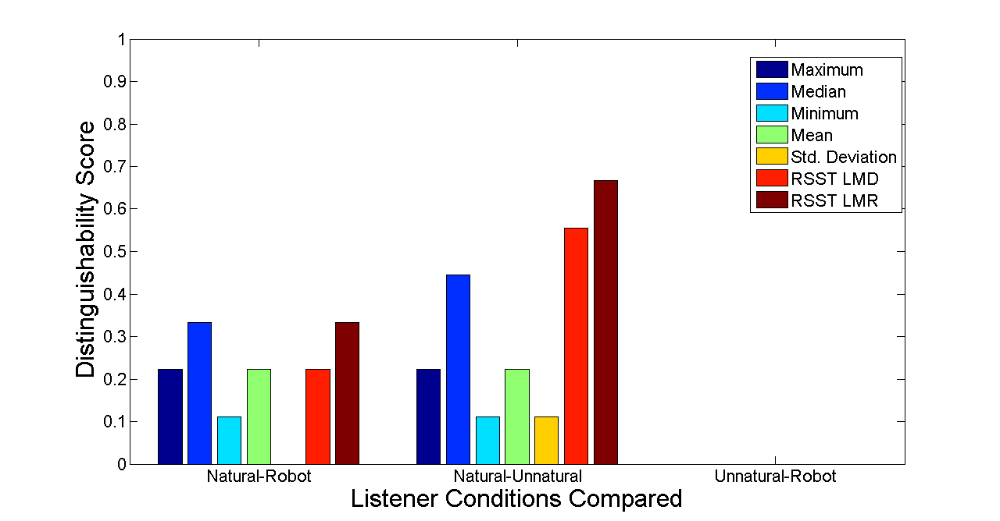
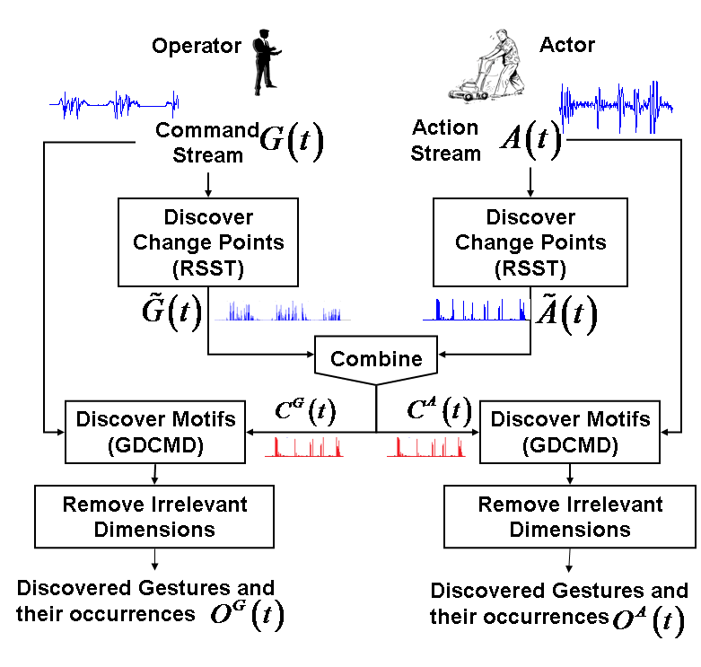

CPMD Toolbox
This toolbox contains a set of routines for sovling change point discovery and motif discovery problems as well as several supporting routines for evaluation, test dataset generation etc.

Download
Copyright and terms of use
The code is made freely available for non-commercial uses only, provided that
the copyright header in each file not be removed, and suitable citation(s) (see
below) be made for papers published based on the code.
The code is not optimized for speed, and we are not responsible for any errors
that might occur in the code.
Use of this code in teaching is allowed given that the authors are notified
of the intention of this usage.
Please read the copyright
information of each routine before using it.
Please do not directly distribute this code without an agreement from the authors.
The copyright of the code is retained by the authors. By downloading/using the
code you agree to all the terms stated above.
Yasser Mohammad and Toyoaki Nishida, "CPMD: A MATLAB Toolbox for Change Point
and Constraint Motif Discovery", 25th International Conference on Industrial, Engineering & Other Applications of
Applied Intelligent Systems (IEA/AIE) 2012
Copyright (c) 2011,
Yasser Mohammad, Toyoaki Nishida.
All rights reserved.
Please direct all questions or comments to
yasser@ii.ist.i.kyoto-u.ac.jp,
yasserm@aun.edu.eg, or
yasserfarouk@gmail.com
The toolbox is available for researchers from the authors. Please contact yasser@ii.ist.i.kyoto-u.ac.jp
Usage Examples
Change Point Disocvery
| Change point discovery (CPD) is an important
knowledge discovery problem. The problem is simply to find the locations
at which the underlying generating dynamics of a signal (timeseries)
changes. This does not -- in many cases -- correspond to an easily
discernable change in the signal itself. CPD algorithms usually proceed in two steps: firstly, a score is assigned to every time step signifying the possibility of change at this point (it is not always a probability because it is not always normalized). We call this step scoring and the most general routing to achieve it in the toolbox is cpd(). Secondly, the scores are analyzed to localize change points. We call this step localization and routines that achieve this step are beginning with findLoc in the toolbox. In many cases these two steps are separate and one can change one of them without affecting the other generating a new algorithm variation. In continuous inspection applications, the focus is usually put onto the localization step because accurate and fast localization is of utmost important. In some other applications (e.g. physiological signal analysis), the scoring step is the important one and may be the localization step can be removed all-together. Given this, it is important to be able to evaluate the performance of both the scoring and localization steps. The Figure shows one time series with added zero mean gaussian noise and 1 P-P standard deviation and the results of applying the four available CPD routines on the toolbox to it. Even with this very high noise level, cpd() can still find some of the major changes in the signal. |
 |
| Motif discovery is a related problem which can be
informally defined as efficiently finding unknown recurring patterns in
long time series with no prior knowledge about their locations. The
research in this problem have led to many techniques including the
PROJECTIONS algorithm, PERUSE, and Gemoda among many others. With
the exception of Gemoda which is quadratic in time and space
complexities, these algorithms aim to achieve sub-quadratic time
complexity by first looking for candidate motif stems using
some heuristic method and then doing an exhaustive motif detection
instead of motif discovery which is linear in time. Constrained Motif Discovery relates the aforementioned two problems. In CMD, the goal is to find unknown recurrent patterns but utilizing a set of constraints on motif locations. One way to introduce these constraints when no prior knowledge is available is to use a CPD algorithm and then search for the motifs around the discovered change points. In this sense a CMD algorithm can be used in conjunction with ta CPD algorithm to solve the general motif discovery problem. CMD has applications in activity detection, gesture recognition , and Human-Robot Interaction, among other fields. The toolbox provides both mcfull() and dgr() routines for solving this problem. The first is usually faster while the later provides more accurate detection of motif boundaries. The Figure shows, an example where the location of a differential drive robot wandering around was collected over time and motifs are discovered in it using dgr(). |
 |
Sample Applications
Physiological Signal Analysis
RSST was used in [1] to distinguish between natural and unnatural interaction behaviors by anaylzing the phsiological signals of the partner. The results shown in the Figure reveal that RSST based features were more effective than traditional feature types for distinguishing the natural and unnatural conditions in a controlled experiments. These results reported in [2] received the best paper award from IEA/AIE 2009.
RSST was used in this work to find regions of fast changes in respiration, skin conductance, and blood volume pulse and this was shown to provide more accurate classification between the two conditions of the experiment compared with traditional statistics.
[1] Yasser Mohammad and Toyoaki Nishida, Using Physiological Signals to Detect Natural Interactive Behavior, Applied Intelligence, 13(1) 79-92 [original article | local copy]
[2] Yasser Mohammad and Toyoaki Nishida, Measuring Naturalness During Close Encounters Using Physiological Signal Processing, The Twenty Second International Conference on Industrial, Engineering & Other Applications of Applied Intelligent Systems (IEA/AIE 2009), June 2009, Taiwan, pp. 281-290 [original article | local copy]
Learning Guided Navigation
In [3], we presented a novel algorithm for learning commands, actions and their associations in a human-robot interaction context. The proposed learning paradigm assumes that the robot can watch the operator instructing an expert actor (another robot or a human subject) and uses the proposed algorithm to discover the kinds of commands/gestures used by the operator, their occurrences, and their meaning in terms of the action primitives of the robot. A feasibility study was conducted using eight novice untrained human subjects to assess the applicability of the proposed algorithm. The evaluation experiment shows that the proposed algorithm can achieve its goals and build a probabilistic network of associations between action primitives and the gestures used by the operator after learning both of them. The algorithm can discover 83.3% of the gesture types and in average it finds 82% of the occurrences of discovered gestures. 100% of action types were discovered and the accuracy of detecting the discovered actions was 88.3%. Moreover the induced PN achieved 95.2% accuracy in predicting actor’s behavior.
Motif discovery in this experiment used dgr() and change point discovery used rsst().
[3] Yasser Mohammad, Toyoaki Nishida, and Shogo Okada, Unsupervised Simultaneous Learning of Gestures, Actions and their Associations for Human-Robot Interaction, IEEE IROS 2009 (October 11 to 15, St. Louis, MO, USA), pp. 2537-2544 [original article | local copy]
Other Applications: